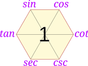
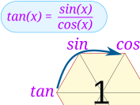
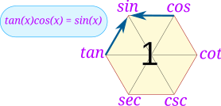
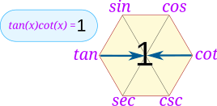
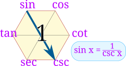
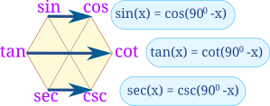
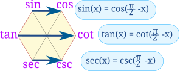
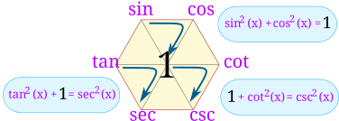
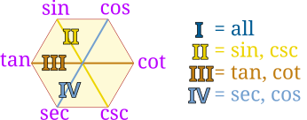

Magic Hexagon for Trig Identities

This hexagon is a special diagram to help you remember some Trigonometric Identities
Sketch the diagram when you are struggling with trig identities ... it may help you! Here is how:
Building It: The Quotient Identities
Start with:
tan(x) = sin(x) / cos(x)

= sin(x) / cos(x)" height="133" width="178">Then add:
- cot (which is cotangent) on the opposite
side of the hexagon to tan - csc (which is cosecant) next, and
- sec (which is secant) last
To help you remember: the "co" functions are all on the right
OK, we have now built our hexagon, what do we get out of it?
Well, we can now follow "around the clock" (either direction) to get all the "Quotient Identities":
| Clockwise |
|
| Counterclockwise |
|
Product Identities
The hexagon also shows that a function between any two functions is equal to them multiplied together (if they are opposite each other, then the "1" is between them):
 = sin(x)" style="max-width:100%" height="135" width="279"> |
 = 1" style="max-width:100%" height="132" width="268"> |
|
| Example: tan(x)cos(x) = sin(x) |
Example: tan(x)cot(x) = 1 |
Some more examples:
- sin(x)csc(x) = 1
- tan(x)csc(x) = sec(x)
- sin(x)sec(x) = tan(x)
But Wait, There is More!
You can also get the "Reciprocal Identities", by going "through the 1"
 = 1/csc(x)" height="134" width="256"> |
Here you can see that sin(x) = 1 / csc(x) |
Here is the full set:
- sin(x) = 1 / csc(x)
- cos(x) = 1 / sec(x)
- cot(x) = 1 / tan(x)
- csc(x) = 1 / sin(x)
- sec(x) = 1 / cos(x)
- tan(x) = 1 / cot(x)
Bonus!
AND we also get these co-function identities:

= cos(90-x), tan(x) = cot(90-x), sec(x) = csc(90-x), " height="118" width="300">Examples:
- sin(30°) = cos(60°)
- tan(80°) = cot(10°)
- sec(40°) = csc(50°)
Or, if you prefer, in radians:

= cos(pi/2-x), tan(x) = cot(pi/2-x), sec(x) = csc(pi/2-x), " height="118" width="296">Examples:
- sin(0.1π) = cos(0.4π)
- tan(π/4) = cot(π/4)
- sec(π/3) = csc(π/6)
Double Bonus: The Pythagorean Identities
The Unit Circle shows us that
sin2 x + cos2 x = 1
The magic hexagon can help us remember that, too, by going clockwise around any of these three triangles:

And we have:
- sin2(x) + cos2(x) = 1
- 1 + cot2(x) = csc2(x)
- tan2(x) + 1 = sec2(x)
You can also travel counterclockwise around a triangle, for example:
- 1 − cos2(x) = sin2(x)
Triple Bonus: Quadrants Positive
It can also help us remember which quadrants each function is positive in.


I hope this helps you!